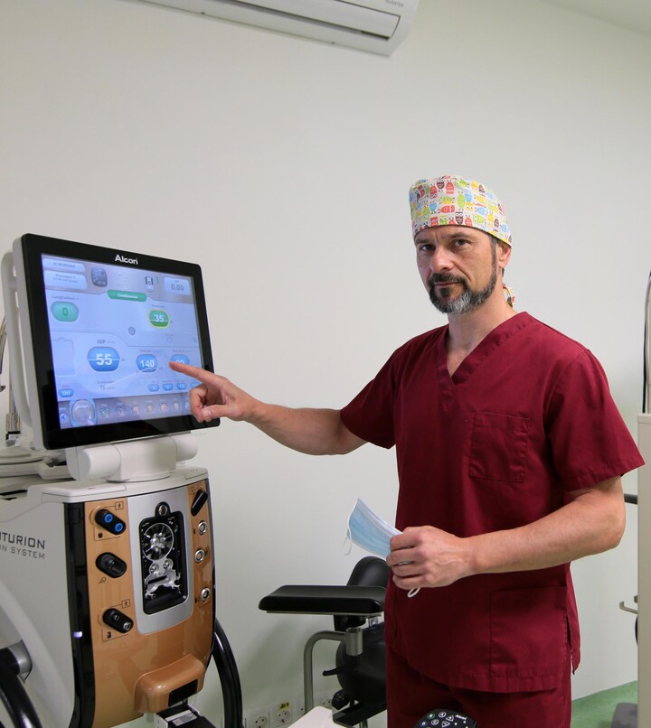

Dr. Andrei Mureșan a absolvit în 1995 Facultatea de Medicină Generală din cadrul Universitatii de Medicina si Farmacie Victor Babes din Timișoara. Tot aici și rezidențiatul 1996-2001.
În perioada mai 2002-noiembrie 2003 urmează un stagiu de un an și jumătate de formare specializată aprofundată în oftalmologie (AFSA) la Universitatea Claude Bernard din Lyon, Franta.
Practică în paralel la Spitalul St. Luc St. Joseph din Lyon și Centre Hospitalier Lyon Sud.
În perioada 2015 – 2017 este atașat la Ospedale Riabilitativo din Motta di Livenza, Italia.

Încă din anul 2005, Dr. Andrei Mureșan înființează Cabinetului Medical Oftalmologic Dr. Mureșan, unde pune în practică cunostințele acumulate în perioada de formare. Cabinetul se dezvoltă de-a lungul anilor, devenind clinica de oftalmologie ARTVISION MED.
Întors în țară, pune bazele Cabinetului Medical Oftalmologic Dr. Muresan în anul 2005 unde pune în practică cunostințele acumulate în perioada de formare. Cabinetul se dezvoltă de-a lungul anilor, devenind clinica de oftalmologie ARTVISION MED.
Aici practică:
Echipa noastră realizează tratamente chirurgicale pentru pacienții săi din anul 2006 și până în prezent. Clinica ARTVISION MED condusă de dr. Mureșan se adresează tuturor categoriilor de vârstă.
Domeniul de interes principal este chirurgia cristalinului atât în scop refractiv cât și optic cu implantare de cristaline artificiale premium. Cu acestea din urmă, clinica noastră are o experiență importantă, obiectivul nostru pentru fiecare pacient fiind o vedere neîngrădită și independentă de alte mijoace de corecție optică, respectiv de ochelari. Folosim predominant implantele cu material hidrofob de la cei mai buni producători pe plan mondial. Aceasta pentru a obține stabilitate, predictibilitate și rezultatele cele mai bune pe termen lung.
Participăm anual la întruniri, simpozioane, conferințe și congrese la nivel național sau european.
Punem un accent deosebit pe colaborarea cu un pacient informat. Împreună cu acesta luăm cele mai bune decizii pentru sănătatea și calitatea vieții sale.
Blocul operator de care dispune Clinica de oftalmologie ArtVision Med condusă de Dr Mureșan este unul modern. Clinica este echipată cu aparat de facoemulsificare de ultimă generație Centurion Active Sentry, tehnică și know-how medical furnizat de Alcon. Un echipament modern și singular în Timișoara care oferă o siguranță deosebită intervențiilor chirurgicale pentru cataractă.
În ceea ce privește implantele de cristalin, la ArtVision Med Timișoara se folosesc materiale testate și verificate de-a lungul timpului. Ele provin de la Alcon și Johnson&Johnson.
Dr. Andrei Mureșan și colaboratorii vor depune întotdeauna eforturi pentru a oferi cea mai bună informație și cel mai bun tratament pentru pacienții săi.